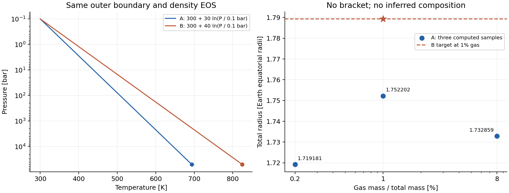
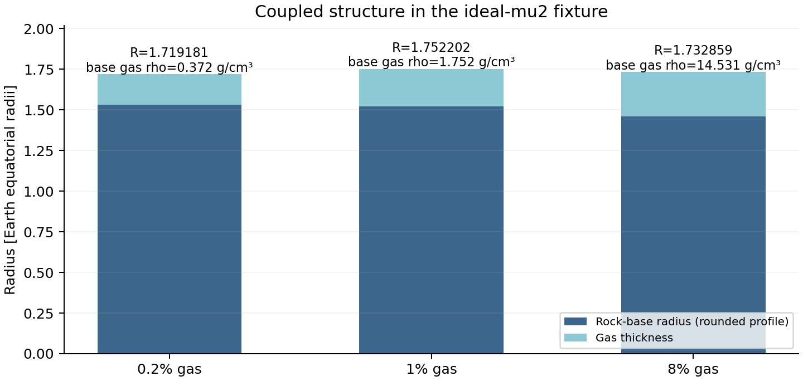

在5地球质量、0.1bar和300K外边界、同一个Gas(mu2,n2)密度EOS下，B对A的半径增量为2.117466%，约236.642 km。收紧控制变化1.89e-10、共线节点加密变化2.04e-11；这只是针对性稳定性检查，不是全局误差界。

A在0.2%与8%的端点都低于B在1%的目标，不能启动既定二分；A在1%又比8%大，不能假定半径单调递增。端点失败不排除内部根，也不证明唯一性。
| case | gas fraction | radius/R_earth | max fit residual |
|---|---|---|---|
| OFF-baseline | 1% | 1.762003509 | OFF status0 |
| OFF-current | 1% | 1.762003509 | OFF status0 |
| A-truth | 1% | 1.752201637 | 2.551e-08 |
| B-truth | 1% | 1.789303911 | 3.442e-08 |
| B-tight | 1% | 1.789303911 | 1.387e-08 |
| A-collinear-refined | 1% | 1.752201637 | 2.543e-08 |
| A-recovery-low | 0.2% | 1.719180622 | 4.348e-08 |
| A-recovery-high | 8% | 1.732858867 | 5.103e-08 |

从1%到8%，气层增厚，固体缩得更多，合计半径反降。8%样例的理想气体基底密度14.53149 g/cm³，高于相邻固体4.7105784 g/cm³。这提示审查工程EOS的物理适用性，不单独证明代码错误或动力学不稳定。基底半径来自舍入剖面，仅用于解释。
不主张：真实TOI-732c组成、成功恢复的气层质量、观测后验、自洽RCE/演化或湿混合大气。气层基底T会传给固体，因此这是耦合结构响应。
下一步先确认真实H/He EOS来源、成分与显式越界策略，再立新合同。现有HHe_tabulated仍有100bar混合选择和表边缘回退，不能直接视为已验收的新固定EOS。
完整报告 · 机器摘要 · 原始FAILED状态 · 下一步验收 · 独立复核范围
数值源码3608c3d；原基线9e74aac。8个已执行个案均数值通过，组成恢复总体失败。未增加API调用，未重复旧54/8/67网格。